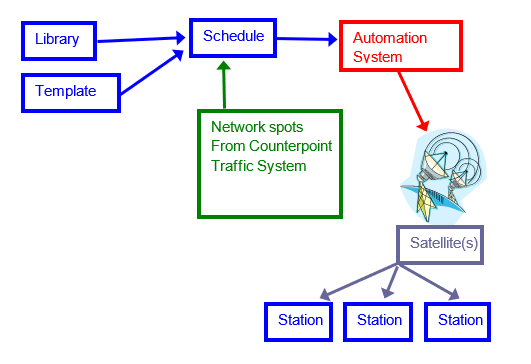

Engineering System
The Counterpoint Engineering system is for networks that need more that just a spot export to an automation system. It is intended to be used by networks that have hundreds of audio sources, and hundreds of audio outputs, all of which must be controlled in sync with each other.

The Counterpoint Traffic & Accounting system produces a spot schedule that indicates the times and dates when commercials should air. The Engineering System knows what Audio Sources (i.e. MP3 files or studio mikes) go to what Buses (Sub Channels of the Satellite Signal) at what times. The scheduled spot information from the Traffic System is merged with the Engineering System airing information to create a schedule file that ensures the spots air at the correct times, and tells the automation system where to pick up and send the audio.
- When the engineering service program is run it takes the templates and libraries and produces a schedule of events for a day. (schedule file)
- The engineering system looks for a spot file from the traffic system. When it finds the traffic spot files, it merges the spots into the schedule file. (merged schedule file)
- The Engineering system then takes the merged schedule file and produces the automation file(s) to air. (automation file)
A bonus feature of the Engineering system is a “Time Finder” command. This allows the engineers to locate ‘unused’ feed time that they can then use to schedule events to be sent. To use it, the user specifies the earliest and latest times that a program must air, and what audio devices and buses are needed for it. The system calculates all possible times that those audio devices and busses are free.
The system runs on a Windows PC network, with complete hardware redundancy.
Because the files generated can be so huge, all major processing takes place overnight, automatically, at a time preset by the user. When necessary, these processes can be started manually, during the day.
Additional Info
- Bus – the bus is the sub-channel of the satellite that the station tunes their satellite dish into to receive their audio (satellite services)
- Start Type – is either TT (true time), external source netcue (EXT), or manual (MAN)
- Audio – the audio name field lists where the audio is coming from, the audio source. All commercials are loaded onto two hard drives. The library has a backup system that tells automation which hard drive/audio source to switch to should one fail.
- Backup – the backup is a ‘stand by’ audio source, should the primary source fail.
- Protection – tells the system where to get audio if the previous two audio sources go down.
- Relay - is an integer to tell Harris/Imagine Automation on which hardware bit to fire.
- Sil. – in the event of dead air the silence field will activate and air a message such as “we are experiencing technical difficulties, please stand by”
- Netque – send commands automatically to the actual stations to affect their automation systems in some way i.e. to turn their equipment on or off throughout a program or switch from one device to another that is attached to the station’s automation system
- Title – Title 1 & Title 2 are comments for information purposes (title 2 is usually a hotline #)